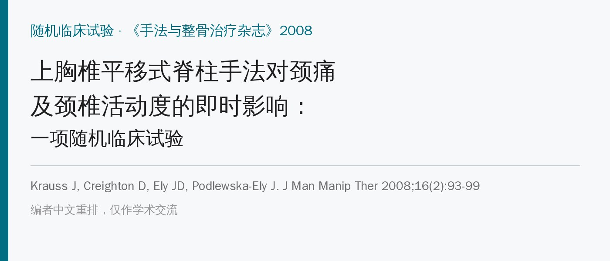
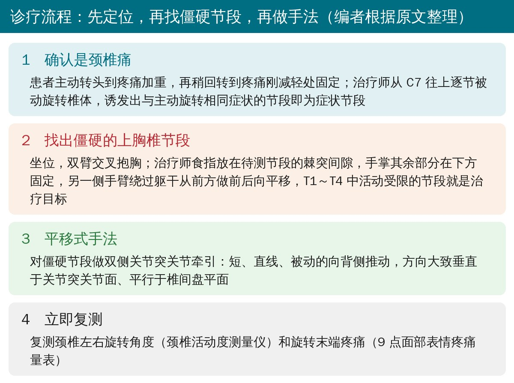
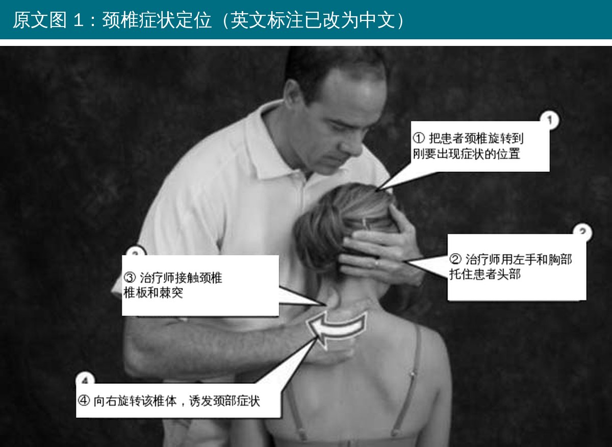
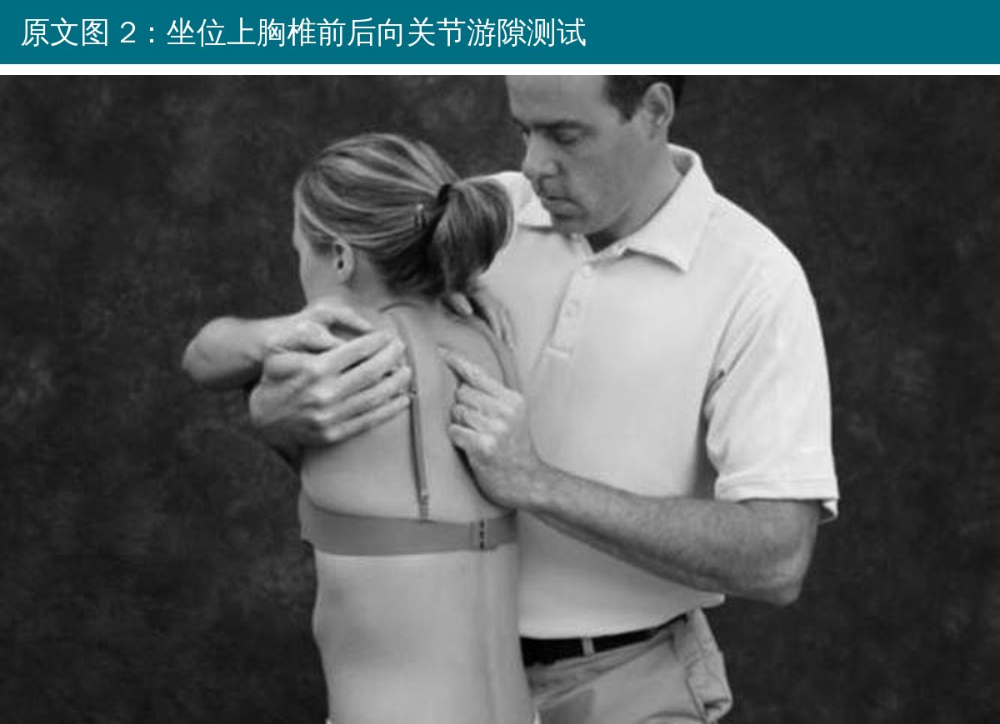
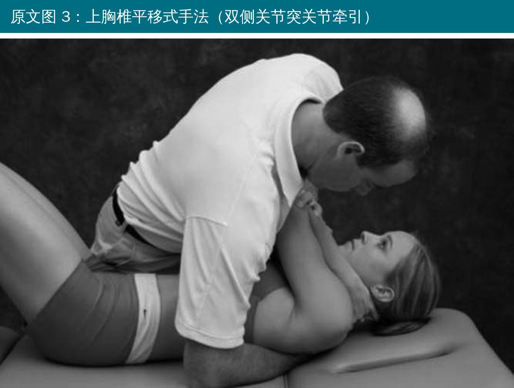
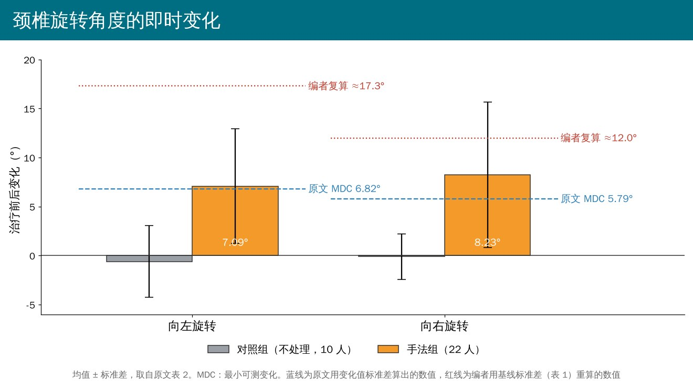

🔖原文信息（编者中文重排）
📚 文献信息
▪ Krauss J, Creighton D, Ely JD, Podlewska-Ely J. The immediate effects of upper thoracic translatoric spinal manipulation on cervical pain and range of motion: a randomized clinical trial. J Man Manip Ther. 2008;16(2):93-99.
▪ 作者来自美国奥克兰大学物理治疗项目，属于 Kaltenborn-Evjenth 骨科手法体系
▪ 随机临床试验，32 名颈痛患者，只看一次治疗后的即时效果
临床上有个常见思路：一个节段僵硬，会让相邻节段代偿性活动过多而疼痛。颈胸交界和上胸椎活动受限被认为是颈痛的危险因素，挥鞭伤患者中上胸椎功能障碍的比例高达 69%。
已有研究发现胸椎推拿能减轻颈痛和功能障碍，但没有随机对照研究用倾角仪测过颈椎活动度的变化。这篇用的是 Kaltenborn 和 Evjenth 发展的平移式脊柱手法：短距离、直线、平行或垂直于关节面的推动，作者认为它能恢复关节活动，同时不容易诱发症状。
• 对象：19～50 岁、无外伤史、隐匿起病的中颈段（C4～C7）后方疼痛，转头时加重；排除胸椎来源症状、系统性疾病、神经根症状、脊髓病和颈椎手术史
• 分组：32 人（女 26、男 6），信封随机分到手法组 22 人、对照组 10 人；对照组什么都不做，在治疗床上坐等相同时间
• 评估：由不知分组的物理治疗师助理在治疗前后测颈椎左右旋转角度（颈椎活动度测量仪）和转头末端的疼痛（9 点面部表情疼痛量表）
• 首次检查当天不治疗，1～2 天后复诊时随机分组并完成治疗和复测

🔖诊疗流程（编者根据原文整理）

🔖原文图 1：颈椎症状定位
• 让患者主动向疼痛侧转头，转到疼痛加重；再慢慢回转，到疼痛刚好减轻一点的位置
• 治疗师用胸部和非检查手把头固定在这个位置
• 从 C7 开始往上，逐节被动旋转椎体（手接触椎板后部和棘突）
• 诱发出与主动转头相同症状的节段，其上位椎体就是症状节段

🔖原文图 2：坐位上胸椎前后向关节游隙测试
• 患者坐在治疗床上，双臂交叉抱胸
• 治疗师食指放在待测节段的棘突间隙，手掌其余部分在下方节段固定
• 另一侧手臂绕过患者躯干、从交叉的手臂下方接触前胸和对侧上肢，用手臂和胸部带动患者做前后向平移
• 在 T1～T4 中找出平移受限的节段；所有入组者都至少有 1 个

🔖原文图 3：上胸椎平移式手法
• 对僵硬的上胸椎节段做双侧关节突关节牵引手法
• 短距离、被动、直线的推动，方向朝背侧：大致垂直于关节突关节面、平行于该节段的椎间盘平面
• 从图上看，患者仰卧、双臂交叉抱胸，治疗师从上方用身体施力
• 原文没有写推几次、用多快的速度、要不要听到弹响

🔖颈椎旋转角度的即时变化（按原文表 2、表 4 绘制）
• 活动度：手法组向左转平均增加 7.09°、向右转增加 8.23°，对照组基本不变；组间差异显著（P = 0.001、0.002）
• 疼痛：按疼痛方向分成 3 个亚组后，只有双侧转头都痛的手法组患者（8 人）疼痛显著下降，组间比较只在向右转时达到 P = 0.05
• 没有人报告手法后症状加重
• 对照组什么都不做：没有假手法，患者知道自己有没有被治疗，期望效应和“被碰了一下”的效果都混在里面，作者自己也承认
• “超过最小可测变化”的结论站不住：最小可测变化应该用测量值本身的离散程度来算，原文却用了“变化量”的标准差。按表 1 的基线标准差重算，左转需要约 17°、右转约 12°，即使改用同一测量者的信度也要 11～13°，平均 7～8° 的改善达不到
• 疼痛结论很弱：亚组每组只有 2～8 人；面部表情疼痛量表没有公认的最小临床重要差异；而且治疗后是在“新的、更大的转头末端”测疼痛，作者也承认这会低估疼痛改善
• 分组不均：22 比 10，对照组样本太小
• 只看即时效果：没有任何随访
• “所有人都超过最小可测变化”不可能：讨论说手法组全部 22 人的改善都超过最小可测变化（左转 6.82°），又说其中 12 人改善了 10°～30°。若真如此，左转平均值至少约 8.5°，但实际平均只有 7.09°（标准差 5.83°），两种说法无法同时成立；结论里“所有受试者活动度都改善了”也是同样问题
• 年龄超出纳入范围：纳入标准是 19～50 岁，表 1 手法组年龄却是 16～52 岁
• 对照组的符号错了：表 2 对照组左转变化写成 −0.6°，但 t 值为正、95% 置信区间（−2.02～3.22）的中心是 +0.6；右转（−0.1°，区间 −1.57～1.77）同样如此
• 表号引错：正文说最小可测变化的计算见表 3，实际在表 4；说疼痛亚组分析见表 4，实际在表 3
• 摘要和结果不一致：摘要只说双侧痛患者向右转疼痛改善（P = .05）；结果里组内比较左右都显著（P = .01、.03），组间比较只有右侧（P = .05，且并未小于 0.05）
• 统计表述错误：“显著性水平设为 0.05%”应为 0.05；用 Levene 检验“正态性”不对，它检验的是方差齐性，而且不能用于性别这种分类变量
• 拼写：MDC 多处写成“MCD”；摘要“re- and post-intervention”应为 pre-
• 转头受限的颈痛患者，可以查一查上胸椎：坐位前后向关节游隙测试简单易学，T1～T4 中常能找到僵硬节段
• 先做症状定位，确认是颈椎痛：从 C7 往上逐节旋转诱发，排除胸椎来源
• 上胸椎平移式手法可以作为增加转头角度的手段，即时增加约 7～8°，且没有人加重。但这个幅度可能在测量误差范围内，要结合患者主观感受判断
• 疼痛改善的证据很弱，不能只靠这一招；手法之后要跟上颈部主动活动和功能训练
表 1 两组年龄、基线活动度（°）和疼痛评分比较
| 项目 | 组别 | 均值 | 标准差 | 标准误 | 95% CI | 最小值 | 最大值 |
|---|---|---|---|---|---|---|---|
| 年龄 | 对照组 | 34.20 | 9.555 | 3.021 | 27.37～41.03 | 19 | 50 |
| 手法组 | 34.95 | 10.513 | 2.241 | 30.29～39.62 | 16 | 52 | |
| 基线左转 | 对照组 | 54.80 | 12.656 | 4.002 | 45.75～63.85 | 30 | 70 |
| 手法组 | 58.95 | 14.669 | 3.128 | 52.45～65.46 | 17 | 78 | |
| 基线右转 | 对照组 | 55.80 | 11.084 | 3.505 | 47.87～63.73 | 35 | 70 |
| 手法组 | 60.41 | 15.271 | 3.256 | 53.64～67.18 | 22 | 85 | |
| 左转时疼痛 | 对照组 | 2.50 | 2.838 | .898 | .47～4.53 | 0 | 7 |
| 手法组 | 3.73 | 2.707 | .577 | 2.53～4.93 | 0 | 9 | |
| 右转时疼痛 | 对照组 | 2.80 | 1.889 | .597 | 1.45～4.15 | 0 | 5 |
| 手法组 | 2.75 | 2.671 | .570 | 1.57～3.93 | 0 | 8 |
表 2 颈椎旋转角度的组内变化（°）
| 组别与方向 | 均值 | 标准差 | 95% CI | t | 自由度 | P（双侧） |
|---|---|---|---|---|---|---|
| 对照组 左转 | −0.6 | 3.66 | −2.02～3.22 | .529 | 9 | .626 |
| 手法组 左转 | 7.09 | 5.83 | 4.52～9.68 | 5.71 | 21 | < 0.01* |
| 对照组 右转 | −0.1 | 2.33 | −1.57～1.77 | .136 | 9 | .895 |
| 手法组 右转 | 8.23 | 7.41 | 4.94～11.51 | 5.21 | 21 | < 0.01* |
表 3 转头时疼痛的组内变化（9 点面部表情疼痛量表）
| 亚组 | 组别与方向 | 均值 | 标准差 | 95% CI | t | 自由度 | P |
|---|---|---|---|---|---|---|---|
| 仅右转痛 | 对照组 右转 | −.100 | .224 | −.378～.178 | −1.00 | 4 | .37 |
| 手法组 右转 | 1.50 | 2.88 | −1.52～4.52 | 1.28 | 5 | .26 | |
| 仅左转痛 | 对照组 左转 | .667 | 1.16 | −2.20～3.54 | 1.00 | 2 | .42 |
| 手法组 左转 | .688 | 1.03 | −.176～1.55 | 1.88 | 7 | .10 | |
| 双侧转头痛 | 对照组 右转 | −.500 | .707 | −6.85～5.85 | −1 | 1 | .50 |
| 手法组 右转 | 1.38 | 1.09 | .461～2.29 | 3.56 | 7 | .01* | |
| 对照组 左转 | −.500 | .707 | −6.85～5.85 | −1 | 1 | .50 | |
| 手法组 左转 | 1.63 | 1.62 | .270～2.98 | 2.84 | 7 | .03* |
表 4 倾角仪测量颈椎旋转的信度和反应度
| 方向 | 组内相关系数 | 标准差 | 测量标准误 | 最小可测变化（95%） |
|---|---|---|---|---|
| 右转 | .92 | 7.41 | 2.09 | 5.79 |
| 左转 | .82 | 5.83 | 2.47 | 6.82 |
* P < 0.05。表中数字照原文录入，原文的错误见上文。
欢迎关注骨科康复小黄公众号，获取更多物理治疗的专业知识！
📄参考文献：
Krauss J, Creighton D, Ely JD, Podlewska-Ely J. The immediate effects of upper thoracic translatoric spinal manipulation on cervical pain and range of motion: a randomized clinical trial. J Man Manip Ther. 2008;16(2):93-99.
原文 PDF 未标注开放许可协议。本文为学术交流用的中文解读：图 1 引自原文（英文标注改为中文），图 2、3 引自原文，诊疗流程卡和活动度变化图为编者根据原文整理绘制，表格为编者翻译。版权归原作者与期刊，如有侵权请联系删除。